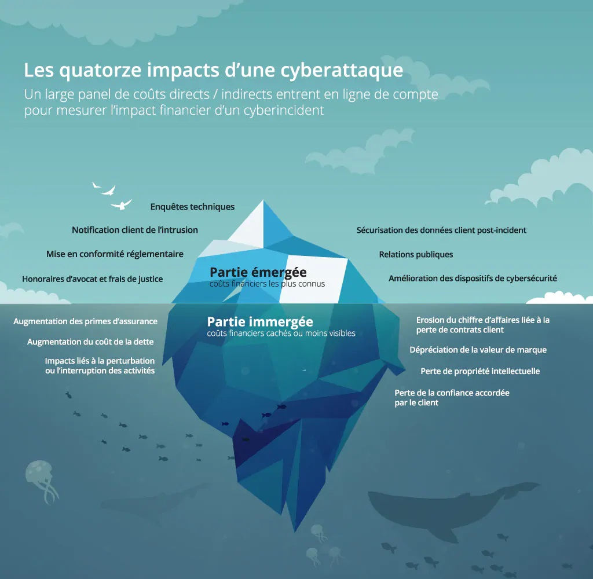

Voici quelques impacts des cyber-attaques :
- Perte de données confidentielles : Les attaquants peuvent voler, corrompre ou détruire des données sensibles, compromettant la vie privée et la sécurité.
- Interruption des opérations : Les attaques par déni de service (DDoS) peuvent rendre les services en ligne inaccessibles, entraînant une perte de revenus et de productivité.
- Rançongiciels (Ransomwares) : Les rançongiciels cryptent les données et exigent des rançons pour les déverrouiller, causant des pertes financières et une paralysie opérationnelle.
- Domination de l'identité : Les usurpations d'identité peuvent permettre aux attaquants de se faire passer pour des utilisateurs légitimes, compromettant ainsi des systèmes et des données.

Prévention et protection contre les cyber-attaques :
- Sensibilisation et formation : Éduquer les utilisateurs sur les bonnes pratiques de cybersécurité, comme la création de mots de passe forts et la reconnaissance des tentatives de phishing.
- Mises à jour et correctifs : Maintenir les logiciels, systèmes d'exploitation et applications à jour pour bénéficier des dernières protections de sécurité.
- Sécurité multicouche : Utiliser une approche multicouche avec des pare-feu, des antivirus, des systèmes de détection d'intrusion (IDS) et des systèmes de prévention d'intrusion (IPS) pour une protection globale.
- Gestion des accès : Limiter l'accès aux informations sensibles en utilisant des authentifications à facteurs multiples et en accordant des privilèges d'accès selon le besoin.
- Sauvegardes régulières : Effectuer des sauvegardes régulières des données critiques pour pouvoir récupérer les informations en cas d'attaque.
- Surveillance continue : Mettre en place une surveillance constante des réseaux et des systèmes pour détecter et répondre rapidement aux activités suspectes.
- Plan de réponse aux incidents : Avoir un plan clair pour répondre aux cyber-attaques, comprenant des protocoles de réponse, de récupération et de communication en cas d'incident.
- Cryptage des données : Chiffrer les données sensibles pour qu'elles ne puissent pas être exploitées même si elles sont compromises.
- Audit et conformité : Réaliser des audits réguliers pour identifier les vulnérabilités et s'assurer que les systèmes sont conformes aux normes de sécurité. En combinant ces mesures et en restant informé des nouvelles menaces et des meilleures pratiques de sécurité, les organisations peuvent réduire considérablement leur vulnérabilité aux cyber-attaques.